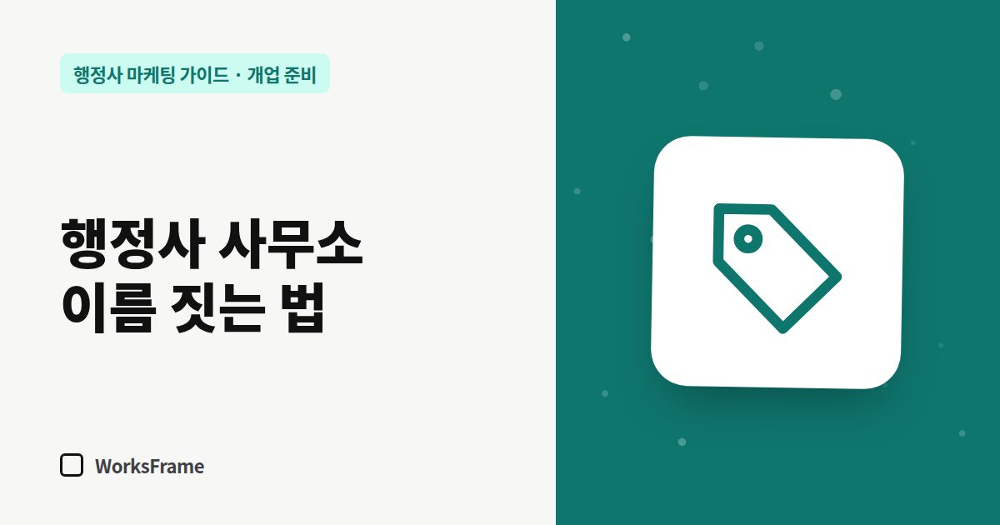

개업 준비
행정사 사무소 이름 짓는 법 — 검색되고 기억되는 상호 만들기
한 줄 답
전화로 불러도 한 번에 알아듣고, 검색하면 우리 사무소만 나오고, 짧은 홈페이지 주소를 만들 수 있는 이름이 좋습니다. 정한 뒤에는 띄어쓰기까지 한 가지로 통일하세요.

사무소 이름은 한 번 정하면 업무신고서, 사업자등록증, 간판, 명함, 네이버 플레이스, 홈페이지 주소까지 따라다닙니다. 바꾸는 비용이 크니 처음에 기준을 세우고 고르세요.
좋은 이름의 네 가지 조건
- 전화로 불러도 한 번에 알아듣는다 — 발음이 헷갈리거나 영어 철자를 설명해야 하면 불리합니다.
- 검색하면 우리 사무소만 나온다 — 흔한 단어 하나로 된 이름은 다른 업체에 묻힙니다.
- 업무나 지역이 떠오른다 — 이름만으로 무슨 일을 하는지 짐작되면 좋습니다. 단, 업무를 넓힐 계획이면 너무 좁히지 마세요.
- 도메인을 만들 수 있다 — 영문 표기로 짧은 도메인을 구할 수 있는지 확인합니다.
이름 유형별 장단점
| 유형 | 예시 | 장점 | 단점 |
|---|---|---|---|
| 대표 이름형 | ○○○행정사사무소 | 신뢰, 개인 브랜드 | 동명이인, 확장 시 한계 |
| 지역형 | ○○역행정사사무소 | 지역 검색에 직관적 | 이전·확장 시 어색 |
| 업무형 | ○○출입국행정사사무소 | 무슨 일인지 바로 보임 | 다른 업무를 넓히기 어려움 |
| 브랜드형 | (고유 단어)행정사사무소 | 기억·검색 독점에 유리 | 처음엔 설명이 필요 |
정하기 전에 해볼 검색 5가지
- 네이버에서 후보 이름 그대로 검색 — 같은 이름의 사무소나 업체가 있는지
- 네이버 지도에서 같은 지역에 비슷한 이름이 있는지
- 구글에서 검색 — 다른 업종에서 강하게 쓰는 이름인지
- 도메인 조회 —
.com,.kr,.co.kr중 짧은 주소가 남아 있는지 - 가족·지인에게 전화로 불러 주고 받아 적게 하기
표기는 하나로 통일
“○○ 행정사 사무소”, “○○행정사사무소”, “○○행정사”를 섞어 쓰면 검색에서 다른 이름처럼 보일 수 있습니다. 띄어쓰기까지 하나로 정해 모든 곳에 똑같이 쓰세요.
자주 묻는 질문
이름에 ‘전문’이라는 말을 넣어도 되나요?
근거가 분명하지 않은 ‘전문’, ‘최고’ 같은 표현은 광고 문구로 문제가 될 수 있습니다. 이름보다 홈페이지에서 주력 업무를 구체적으로 보여 주는 편이 안전합니다. 자세한 내용은 피해야 할 표현을 참고하세요.
영문 이름도 필요한가요?
출입국 업무처럼 외국인 고객이 많다면 영문 표기를 함께 정해 두세요. 구글 비즈니스 프로필과 다국어 페이지에 씁니다.